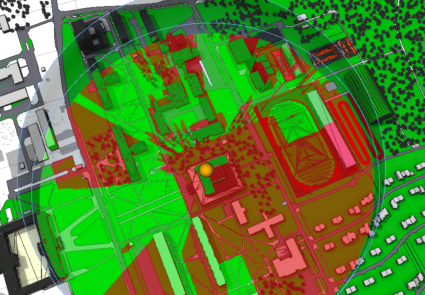
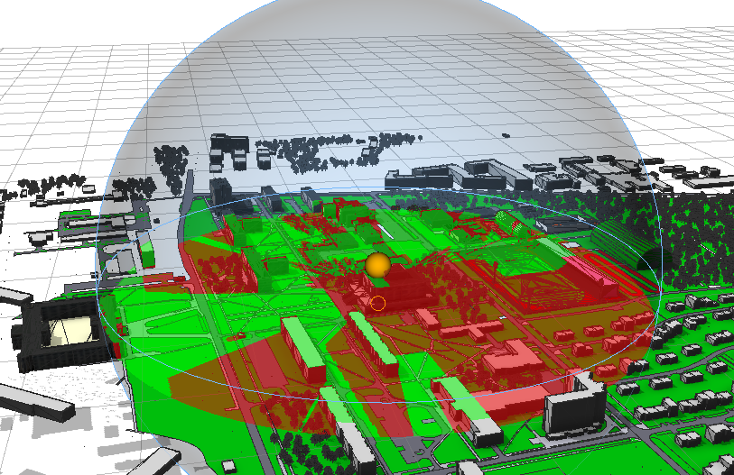

Analizy Widoczności
Przewidywanie widoczności było jedną z najstarszych motywacji do badań nad mapowaniem terenu. Planowanie wojskowe (przemieszczanie pododdziałów, zadania zwiadowcze, planowanie ataku) wymaga przeprowadzenia analiz widoczności. W zależności od sytuacji celem może być obserwacja aktywność wroga lub terytorium w taki sposób, aby pozostać niezauważonym. Potrzeba dokładnego rozpoznania wojska zapewniła bodziec do rozwoju wielu technik analizy geograficznej i przestrzennej, które są obecnie szeroko stosowane w cywilnych badaniach i planowaniu. Rosnące zainteresowanie zapobiegania terroryzmowi i przestępczości oznacza, że zainteresowanie widocznością przenosi się na obszary takie jak monitorowanie nadzoru, gdzie służy do optymalizacji zasięgu kamer wideo lub oszacowania możliwych pozycji snajperskich.
Narzędzie ViewshedCreation
Pokazuje widoczność z punktu obserwatora (przypomina podgląd kamery) do określonego celu. Pozwala to na identyfikację widocznych i niewidocznych obiektów w określonym zakresie. Narzędzie to, może być przydatne przy ocenie widoku z istniejącego budynku, identyfikowaniu widoków kluczowych, punktów szczególnych lub identyfikacji zasięgu kamery dla celów bezpieczeństwa. Użycie tych narzędzi pozwala przyciągnąć wybrane punkty zarówno obserwatora jak i obszaru zainteresowania do budynków i terenów w celu ułatwienia ich pozycjonowania. Korzystanie z narzędzia ViewshedTool pozwala określić widoczny obszar od punktu obserwatora do punktu docelowego. Obszary, które są widoczne przez obserwatora (w domyślnym ustawieniu przedstawione są za pomocą koloru zielonego) lub te niewidoczne (do-myślnie na czerwono).
Narzędzie ViewDome
Narzędzie ViewDome pozwala zobaczyć widoczność z danego punktu w widoku 360 stopni. Pozostałe właściwości w ustawieniu domyślnym prezentują się tak jak poprzedniej analizie. Narzędzie to wymaga od nas ustalenia punktu obserwatora jak również punktu lub obszaru obserwowanego.
